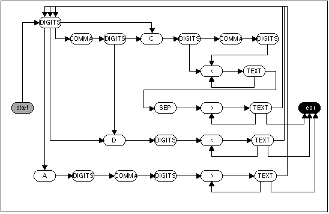
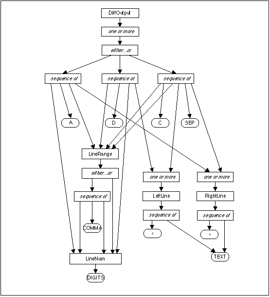
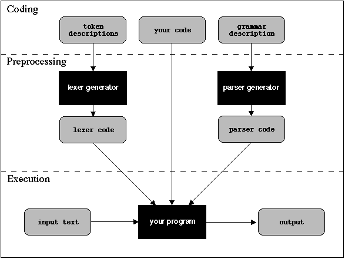
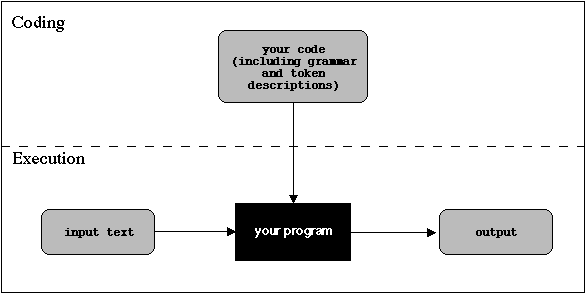

<!DOCTYPE doctype PUBLIC "-//w3c//dtd html 4.0 transitional//en">
<html>
<head>
  <meta http-equiv="Content-Type"
 content="text/html; charset=iso-8859-1">
  <meta name="GENERATOR"
 content="Mozilla/4.7 [en] (X11; I; IRIX 6.2 IP22) [Netscape]">
  <title>The man(1) of descent - The Perl Journal, Winter 1998</title>
<!-- always update the article title and issue -->
</head>
<body text="#000000" bgcolor="#ffffff" link="#dd0000" vlink="#dd0000"
 alink="#dd0000" background="bkg-article.gif">
<div align="right"><i>This article is reproduced from</i> <br>
<i>Issue #12 of <a href="http://www.tpj.com">The Perl Journal</a></i> <br>
<i>by the kind permission of the editor.</i></div>
<br>
<i></i>&nbsp;
<p><br>
</p>
<center>
<h1> <font size="+4">The <tt>man(1)</tt> of descent</font></h1>
</center>
<center>
<h3> <i>Damian Conway</i></h3>
</center>
<center>
<p><br>
<i>Being a scholarly Treatife on the Myfterious Origins</i> <br>
<i>and diverfe Ufes of that Module known as Parfe::RecDescent</i></p>
</center>
<p><br>
&nbsp; </p>
<div align="right">
<table border="1" cellspacing="0" cellpadding="5" nosave="">
  <tbody>
    <tr>
      <td align="center" bgcolor="#cccc99">
      <center><b>Packages Used</b></center>
      </td>
    </tr>
    <tr nosave="">
      <td nosave="">
      <center>Perl 5.004 or
later&nbsp;&nbsp;&nbsp;&nbsp;&nbsp;&nbsp;&nbsp;&nbsp;&nbsp;&nbsp; <a
 href="http://www.perl.com/CPAN" target="resource window">CPAN</a> <br>
Parse::RecDescent&nbsp;&nbsp;&nbsp;&nbsp;&nbsp;&nbsp;&nbsp;&nbsp;&nbsp;
 <a href="http://www.perl.com/CPAN" target="resource window">CPAN</a></center>
      </td>
    </tr>
  </tbody>
</table>
</div>
<font size="+4">S</font>o who cares about parsing anyway?
<p>Er, well, humans do. Our brains seem to be hard-wired for a
syntactic view of the world, and we strive (often unreasonably) to find
or impose grammatical structures in our lives. Homo Sapiens is a
species evolved for language (or possibly, by it). We are compulsive
and incessant parsers: of written text, of spoken words, of our
children's faces, of our dogs' tails, of our politicians' body
language, or the simple grammar of traffic lights, and the complex
syntax of our own internal aches and pains. You're parsing right now:
shapes into letters, letters into words, words into sentences,
sentences into messages, messages into (dis)belief! </p>
<p>So it's not surprising that programmers (many of whom were once
human) should be concerned with parsing too. If you use any of the
modules in the Pod::, Date::, HTML::, CGI::, LWP::, or Getopt::
hierarchies, or the Expect module, or TeX::Hyphen, or Text::Refer, or
ConfigReader, or PGP, or Term::ReadLine, or CPAN, or Mail::Tools, or
one of the database interface modules, or even if you just read in a
line at a time and match it against some regular expressions, then
you're parsing. Sometimes in the privacy and comfort of your own home. </p>
<p>Each of those modules contains a chunk of custom-made,
carefully-tuned, walnut-veneered code, which takes ugly raw data and
sculpts it into finely-chiseled information you can actually use. </p>
<p>Of course, if the CPAN doesn't supply a parsing system for the
particular ugly raw data you need to process, then you're going to have
to roll your own. That's what parser generators like Parse::RecDescent
are for. </p>
<h2> Anti-<i>diff</i>-erentiation</h2>
To use such tools, you first need to know something about formal
grammars. Now just relax! This next bit won't hurt.
<p>Suppose, for example, you want to "reverse" the output of a <i>diff</i>
(i.e. as if the two files had been compared in the opposite order).
Here's a typical <i>diff</i> output: </p>
<pre>17,18d16<br>&lt; (who writes under the<br>&lt; pseudonym "Omniscient Trash")<br>45,46c43,44<br>&lt; soon every Tom, Dick or Harry<br>&lt; will be writing his own Perl book<br>---<br>&gt; soon every Tom, Randal and Larry<br>&gt; will be writing their own Perl book<br>69a68,69<br>&gt; Copyright (c) 1998, The Perl Journal.<br>&gt; All rights reserved.</pre>
Each chunk encodes a single transformation of the original file. For
example, the first three lines mean "at lines 17 to 18 of the original
file perform a 'Delete' operation, leaving us at line 16 in the second
file." It then shows the two lines to be removed, each prefixed by a
less-than sign.
<p>The next six lines mean "at lines 45 to 46 of the first file do a
'Change' operation, producing lines 43 to 44 in the second file." It
then shows the lines to be replaced (prefixed by less-than signs) and
the replacement lines (with greater-than signs). </p>
<p>The last three lines mean "at line 69 in the first file do an
'Append' operation, to produce lines 68 to 69 in the second file." The
lines to be added are then listed, prefixed by greater-than signs. </p>
<p>So a <i>diff</i> output consists of a series of operations, each of
which in turn consists of a command followed by context information.
Commands consist of a single letter sandwiched between numbers that
represent line ranges in each file. Context information consists of one
or more lines of left context, right context, or both, where each
context line consists of a line of text preceded by an arrow. </p>
<h3> <font size="+0">SAY IT GRAMMATICALLY</font></h3>
Phew! That's a lot of structure for such a small piece of text. But
it's useful structure.
<p>Let's take this English and turn it into a formal grammar that
conveys the same information more precisely (and in a more compact and
readable format): </p>
<pre>DiffOutput&nbsp;&nbsp;&nbsp;&nbsp; -&gt; Command(s) EOF<br><br>Command&nbsp;&nbsp;&nbsp;&nbsp;&nbsp;&nbsp;&nbsp; -&gt; LineNum A_CHAR LineRange&nbsp;<br>&nbsp;&nbsp;&nbsp;&nbsp;&nbsp;&nbsp;&nbsp;&nbsp;&nbsp;&nbsp;&nbsp;&nbsp;&nbsp;&nbsp;&nbsp;&nbsp;&nbsp;&nbsp;&nbsp;&nbsp; RightLine(s)<br>&nbsp;&nbsp;&nbsp;&nbsp;&nbsp;&nbsp;&nbsp;&nbsp;&nbsp;&nbsp;&nbsp;&nbsp;&nbsp;&nbsp;&nbsp;&nbsp;&nbsp;&nbsp; | LineRange D_CHAR LineNum<br>&nbsp;&nbsp;&nbsp;&nbsp;&nbsp;&nbsp;&nbsp;&nbsp;&nbsp;&nbsp;&nbsp;&nbsp;&nbsp;&nbsp;&nbsp;&nbsp;&nbsp;&nbsp;&nbsp;&nbsp; LeftLine(s)<br>&nbsp;&nbsp;&nbsp;&nbsp;&nbsp;&nbsp;&nbsp;&nbsp;&nbsp;&nbsp;&nbsp;&nbsp;&nbsp;&nbsp;&nbsp;&nbsp;&nbsp;&nbsp; | LineRange C_CHAR LineRange<br>&nbsp;&nbsp;&nbsp;&nbsp;&nbsp;&nbsp;&nbsp;&nbsp;&nbsp;&nbsp;&nbsp;&nbsp;&nbsp;&nbsp;&nbsp;&nbsp;&nbsp;&nbsp;&nbsp;&nbsp; LeftLine(s)<br>&nbsp;&nbsp;&nbsp;&nbsp;&nbsp;&nbsp;&nbsp;&nbsp;&nbsp;&nbsp;&nbsp;&nbsp;&nbsp;&nbsp;&nbsp;&nbsp;&nbsp;&nbsp;&nbsp;&nbsp; SEPARATOR<br>&nbsp;&nbsp;&nbsp;&nbsp;&nbsp;&nbsp;&nbsp;&nbsp;&nbsp;&nbsp;&nbsp;&nbsp;&nbsp;&nbsp;&nbsp;&nbsp;&nbsp;&nbsp;&nbsp;&nbsp; RightLine(s)<br>LineNum&nbsp;&nbsp;&nbsp;&nbsp;&nbsp;&nbsp;&nbsp; -&gt; DIGITS<br><br>LineRange&nbsp;&nbsp;&nbsp;&nbsp;&nbsp; -&gt; LineNum COMMA LineNum<br>&nbsp;&nbsp;&nbsp;&nbsp;&nbsp;&nbsp;&nbsp;&nbsp;&nbsp;&nbsp;&nbsp;&nbsp;&nbsp;&nbsp;&nbsp;&nbsp;&nbsp;&nbsp; | LineNum<br><br>LeftLine&nbsp;&nbsp;&nbsp;&nbsp;&nbsp;&nbsp; -&gt; LEFT_BRACKET TEXTLINE<br><br>RightLine&nbsp;&nbsp;&nbsp;&nbsp;&nbsp; -&gt; RIGHT_BRACKET TEXTLINE</pre>
The way to read a formal grammar is to replace each right arrow (-&gt;)
with the words "...<i>consists of</i>..." and each vertical bar (|)
with the words "...<i>or possibly</i>...". The parenthesized (s) means
the same as in English, namely, "...one or more times". So, for
example, the grammar above says that a LineRange consists of either a <tt>LineNum</tt>
subrule, then a COMMA, and finally another <tt>LineNum</tt>, or
possibly just a single LineNum.
<p>Each of the six chunks of the above grammar specifies a separate <i>rule</i>.
Each identifier on the left of an arrow is the rule's name and each
list of items to the right of an arrow (or a vertical bar) specifies
the sequence of things that together comprise that rule. Such sequences
are called <i>productions</i>. The vertical bars separate alternative
productions, any one of which is an acceptable set of components for
the rule as a whole. </p>
<p>Items in a production may be either the name of some other rule
(such items are called <i>non-terminals</i> or <i>subrules</i>), or
the name of something which represents some actual text (such items are
called <i>terminals</i>). In the above grammar, the nonterminals are
in mixed-case and the terminals in upper-case. </p>
<p>The use of named terminals implies that something else - usually, a
specially written subroutine called a <i>lexer</i> - is going to
preprocess the original input text and transform it into a sequence of
labelled strings (called <i>tokens</i>). It is the labels on those
tokens that will (we hope) match the terminals. More on lexers and
lexing later. </p>
<h3> <font size="+0">REVERSING A <i>diff</i></font></h3>
If you gave the full grammar to a parser generator, you'd get back a
piece of code able to recognize any text conforming to the grammar's
rules and, more importantly, identify each part of the text (<tt>17</tt>,<tt>18</tt>
is a <tt>LineRange</tt>, <tt>d</tt> is a <tt>D_CHAR</tt>, <tt>16</tt>
is a <tt>LineNum</tt>, and so on) Of course, recognizing the text is
only half the battle. Our goal is to reverse it.
<p>Fortunately, reversing a <i>diff</i> output is easy. You just change
every 'Append' command to a 'Delete', and vice versa, and then swap the
order of line numbers and the contexts associated with every command
(including those belonging to 'Change' commands). The contexts also
have their leading arrows reversed. </p>
<p>Doing that with the example text above you get: </p>
<pre>16a17,18<br>&gt; (who writes under the<br>&gt; pseudonym "Omniscient Trash")<br>43,44c45,46<br>&lt; soon every Tom, Randal and Larry<br>&lt; will be writing their own Perl book<br>---<br>&gt; soon every Tom, Dick or Harry<br>&gt; will be writing his own Perl book<br>68,69d69<br>&lt; Copyright (c) 1998, The Perl Journal.<br>&lt; All rights reserved</pre>
In order for the above grammar to automatically reverse diff output, it
needs to know what to do whenever it recognizes something reversible
(i.e. a complete command). You can tell it what to do by embedding
blocks of code, which the parser then automatically calls whenever it
successfully recognizes the corresponding production.
<p>Adding the equivalent Perl actions into the above grammar: </p>
<pre>DiffOutput&nbsp;&nbsp;&nbsp;&nbsp;&nbsp;&nbsp; -&gt; Command(s) EOF<br><br>Command&nbsp;&nbsp;&nbsp;&nbsp; -&gt; LineNum A_CHAR LineRange<br>&nbsp;&nbsp;&nbsp;&nbsp;&nbsp;&nbsp;&nbsp;&nbsp;&nbsp;&nbsp;&nbsp;&nbsp;&nbsp;&nbsp;&nbsp;&nbsp;&nbsp;&nbsp; RightLine(s)<br>&nbsp;&nbsp;&nbsp;&nbsp;&nbsp;&nbsp;&nbsp;&nbsp;&nbsp;&nbsp;&nbsp;&nbsp;&nbsp;&nbsp;&nbsp;&nbsp;&nbsp;&nbsp;&nbsp; { print "$item3 d $item1\n";<br>&nbsp;&nbsp;&nbsp;&nbsp;&nbsp;&nbsp;&nbsp;&nbsp;&nbsp;&nbsp;&nbsp;&nbsp;&nbsp;&nbsp;&nbsp;&nbsp;&nbsp;&nbsp;&nbsp;&nbsp;&nbsp; $item4 =~ s/^&gt;/&lt;/gm;<br>&nbsp;&nbsp;&nbsp;&nbsp;&nbsp;&nbsp;&nbsp;&nbsp;&nbsp;&nbsp;&nbsp;&nbsp;&nbsp;&nbsp;&nbsp;&nbsp;&nbsp;&nbsp;&nbsp;&nbsp;&nbsp; print $item[4]; }<br>&nbsp;&nbsp;&nbsp;&nbsp;&nbsp;&nbsp;&nbsp;&nbsp;&nbsp;&nbsp;&nbsp;&nbsp;&nbsp;&nbsp;&nbsp; | LineRange D_CHAR LineNum<br>&nbsp;&nbsp;&nbsp;&nbsp;&nbsp;&nbsp;&nbsp;&nbsp;&nbsp;&nbsp;&nbsp;&nbsp;&nbsp;&nbsp;&nbsp;&nbsp;&nbsp;&nbsp; LeftLine(s)<br>&nbsp;&nbsp;&nbsp;&nbsp;&nbsp;&nbsp;&nbsp;&nbsp;&nbsp;&nbsp;&nbsp;&nbsp;&nbsp;&nbsp;&nbsp;&nbsp;&nbsp;&nbsp;&nbsp; { print "$item3 a $item1\n";<br>&nbsp;&nbsp;&nbsp;&nbsp;&nbsp;&nbsp;&nbsp;&nbsp;&nbsp;&nbsp;&nbsp;&nbsp;&nbsp;&nbsp;&nbsp;&nbsp;&nbsp;&nbsp;&nbsp;&nbsp;&nbsp; $item4 =~ s/^&lt;/&gt;/gm;<br>&nbsp;&nbsp;&nbsp;&nbsp;&nbsp;&nbsp;&nbsp;&nbsp;&nbsp;&nbsp;&nbsp;&nbsp;&nbsp;&nbsp;&nbsp;&nbsp;&nbsp;&nbsp;&nbsp;&nbsp;&nbsp; print $item[4]; }<br>&nbsp;&nbsp;&nbsp;&nbsp;&nbsp;&nbsp;&nbsp;&nbsp;&nbsp;&nbsp;&nbsp;&nbsp;&nbsp;&nbsp;&nbsp; | LineRange C_CHAR LineRange<br>&nbsp;&nbsp;&nbsp;&nbsp;&nbsp;&nbsp;&nbsp;&nbsp;&nbsp;&nbsp;&nbsp;&nbsp;&nbsp;&nbsp;&nbsp;&nbsp;&nbsp;&nbsp; LeftLine(s) SEPARATOR RightLine(s)<br>&nbsp;&nbsp;&nbsp;&nbsp;&nbsp;&nbsp;&nbsp;&nbsp;&nbsp;&nbsp;&nbsp;&nbsp;&nbsp;&nbsp;&nbsp;&nbsp;&nbsp;&nbsp;&nbsp; { print "$item3 c $item1\n";<br>&nbsp;&nbsp;&nbsp;&nbsp;&nbsp;&nbsp;&nbsp;&nbsp;&nbsp;&nbsp;&nbsp;&nbsp;&nbsp;&nbsp;&nbsp;&nbsp;&nbsp;&nbsp;&nbsp;&nbsp;&nbsp; $item4 =~ s/^&lt;/&gt;/gm;<br>&nbsp;&nbsp;&nbsp;&nbsp;&nbsp;&nbsp;&nbsp;&nbsp;&nbsp;&nbsp;&nbsp;&nbsp;&nbsp;&nbsp;&nbsp;&nbsp;&nbsp;&nbsp;&nbsp;&nbsp;&nbsp; $item6 =~ s/^&gt;/&lt;/gm;<br>&nbsp;&nbsp;&nbsp;&nbsp;&nbsp;&nbsp;&nbsp;&nbsp;&nbsp;&nbsp;&nbsp;&nbsp;&nbsp;&nbsp;&nbsp;&nbsp;&nbsp;&nbsp;&nbsp;&nbsp;&nbsp; print $item6, $item5, $item4; }<br><br>LineNum&nbsp;&nbsp;&nbsp;&nbsp;&nbsp; -&gt; DIGITS<br><br>LineRange&nbsp;&nbsp;&nbsp; -&gt; LineNum COMMA LineNum<br>&nbsp;&nbsp;&nbsp;&nbsp;&nbsp;&nbsp;&nbsp;&nbsp;&nbsp;&nbsp;&nbsp;&nbsp;&nbsp;&nbsp;&nbsp;&nbsp;&nbsp;&nbsp;&nbsp; | LineNum<br><br>LeftLine&nbsp;&nbsp;&nbsp;&nbsp; -&gt; LEFT_BRACKET TEXTLINE<br><br>RightLine&nbsp;&nbsp;&nbsp; -&gt; RIGHT_BRACKET TEXTLINE</pre>
Note that the actions need access to the various bits of data which
have been recognized, in order to reprint them. In this example, they
access the data by referring to the lexically scoped variables <tt>$item1</tt>,<tt>$item2</tt>,<tt>$item3</tt>,
and so on. These variables are automagically assigned the sub-strings
of the original text that were matched by each item in the current
production (just as <tt>$1</tt>, <tt>$2</tt>, <tt>$3</tt>, etc.
automatically receive the values of the last matched parentheses of a
regular expression). So the production:
<pre>Command&nbsp; -&gt; LineNum A_CHAR LineRange<br>&nbsp;&nbsp;&nbsp;&nbsp;&nbsp;&nbsp;&nbsp;&nbsp;&nbsp;&nbsp;&nbsp;&nbsp;&nbsp;&nbsp; RightLine(s)<br>&nbsp;&nbsp;&nbsp;&nbsp;&nbsp;&nbsp;&nbsp;&nbsp;&nbsp;&nbsp;&nbsp;&nbsp;&nbsp;&nbsp; { print "$item3 d $item1\n";<br>&nbsp;&nbsp;&nbsp;&nbsp;&nbsp;&nbsp;&nbsp;&nbsp;&nbsp;&nbsp;&nbsp;&nbsp;&nbsp;&nbsp;&nbsp;&nbsp; $item4 =~ s/^&gt;/&lt;/gm;<br>&nbsp;&nbsp;&nbsp;&nbsp;&nbsp;&nbsp;&nbsp;&nbsp;&nbsp;&nbsp;&nbsp;&nbsp;&nbsp;&nbsp;&nbsp;&nbsp; print $item[4]; }</pre>
has now been told that if a Command rule matches an 'Append' command,
then it should print out the text matching the <tt>LineRange</tt> (item
3 of the production), then a 'd', then the original text which matched
the <tt>LineNum</tt> (item 1). Then it should reverse the arrows on the
context lines (item 4) and print those out too.
<h2> From Grammar to Reality</h2>
Having specified the grammar, and its behavior when various productions
are recognized, all you need to do is build an actual parser that
implements the grammar. Of course, building the parser is the tedious
and difficult bit. And that's why there are automated parser
construction tools like Parse::RecDescent, and its distant cousins <i>yacc</i>,<i>perl-byacc</i>,
PCCTS, Parse::Yapp, and <i>libparse</i>.
<h3> <font size="+0">MANY PATHS UP THE MOUNTAIN</font></h3>
When it comes to such tools, the lazy programmer is spoilt for choice.
There are dozens of freely-available packages for generating parsers in
a variety of languages (but mostly in C, C++, Java, and Perl).
<p>Almost all of the parser generators belong to one of two families-<i>top-down</i>
or <i>bottom-up</i>-whose names describe the way their parsers go about
comparing a text to a grammar. </p>
<h3> <font size="+0">BOTTOMS UP...</font></h3>
Bottom-up parsers -- better known as "LR" parsers: "scan Left,
expanding Rightmost subrule(in reverse)" -- are usually implemented as
a series of states, encoded in a lookup table. The parser moves from
state to state by examining the next available token in the text, and
then consulting the table to see what to do next. The choices are:
perform an action, change to a new state, or give up in disgust.
<p>A bottom-up parse succeeds if all the text is processed and the
parser is left in a predefined "successful" state. Parsing can fail at
any time if the parser sees a token for which there is no suitable next
state, and is therefore forced to give up. </p>
<p>In effect, a bottom-up parser converts the original grammar into a
maze, which the text must thread its way through, state-to-state, one
token at a time. If the trail of tokens leads to a dead end, then the
text didn't conform to the rules of the original grammar and is
rejected. In this metaphor, any actions that were embedded in the
grammar are scattered throughout the maze and are executed whenever
they are encountered. </p>
<p>The bottom-up "maze" for the <i>diff</i>-reversing grammar above
looks like Figure 1. </p>
<center>
<p><a
 href="javascript:displayWindow('images/TPJ_maze.gif', '548', '356')"></a> </p>
<p><font size="-1"><b>Figure 1: </b>bottom-up maze</font></p>
</center>
<h3> <font size="+0">...WITH THE TOP DOWN</font></h3>
Top-down parsers -- a.k.a. "LL" parsers: "scan Left, expanding Leftmost
subrule" -- work quite differently. Instead of working token-to-token
through a flattened-out version of the grammar rules, top-down parsers
start at the highest level and attempt to match the most general rule
first.
<p>Thus a top-down parser would start by attempting to match the entire <tt>DiffOutput</tt>
rule, and immediately realize that to do so it must match one or more
instances of the <tt>Command</tt> rule. So it would attempt to match a <tt>Command</tt>
rule, and immediately realize that to do so it must match one of the
three productions in the <tt>Command</tt> rule. So it would try to
match the first production, and realize that it must first match a <tt>LineNum</tt>,
and so on. </p>
<p>It would keep moving ever further down the hierarchy of rules until
it actually reached a point where it could try and match a terminal
(against the first available token). If the terminal and token matched,
the parser would move back up the hierarchy looking for the next bit of
the enclosing production, and following that down until the next token
was matched. If all the parts of the production were matched, the
parser would move back up, matching higher and higher rules, until it
succeeded in matching the top-most rule completely. </p>
<p>If at some point a token fails to match, then the parser would work
back up the tree, looking for an alternative way of matching the
original rule (i.e. via a different production of the same rule). If
all alternatives eventually fail, then the parse as a whole fails. </p>
<p>In other words, a top-down parser converts the grammar into a tree
(or more generally, a graph), which it then traverses in a
top-to-bottom, left-to-right order. If a particular branch of the tree
fails to match, then the parser backs up and tries the next possible
branch. If all branches fail, then the parse itself fails. In this
approach, embedded actions represent leaves on the tree, and are
executed if the traversal ever reaches them. </p>
<p>The top-down "tree" for the diff-reversing grammar looks like Figure
2. </p>
<center>
<p><a
 href="javascript:displayWindow('images/TPJ_tree.gif', '555', '610')"></a> </p>
<p><font size="-1"><b>Figure 2: </b>top-down tree</font></p>
</center>
<h3> <font size="+0">THE DESCENT OF RECDESCENT</font></h3>
Tools for building bottom-up parsers have a long and glorious history,
dominated by the <i>yacc</i> program developed by Stephen Johnson at
Bell Labs in the mid 1970's. <i>Yacc</i> accepts a grammar very similar
to those shown above and generates C code, which can then be compiled
into a function that acts as parser for the language the grammar
describes.
<p>Rick Ohnenus adapted a modern variant of <i>yacc</i> to create <i>perl-byacc</i>,
which generates Perl code directly. Later, Jake Donham developed a set
of patches allowing <i>perl-byacc</i> to generate parser objects (rather
than parsing functions). </p>
<p>Recently, Fran&amp;ccecil;ois Desarmenien went one better and
implemented a complete object oriented <i>yacc</i>-like parser
generator, called Parse::Yapp, directly in Perl (it also generates its
parsers as Perl code). </p>
<p>Top-down parsing has been less popular, but one prominent tool which
uses this approach is PCCTS, developed as a PhD research project by
Terence Parr. PCCTS provides much more power and flexibility than the <i>yacc</i>
family, but generates C++, not Perl code. </p>
<p>John Wiegley's <i>libparse</i> bundle is an extremely comprehensive
and ambitious parsing system that does generate Perl code. It is still
in alpha release, but can already generate top-down parsers, at least on
NT machines. Finally, my own Parse::RecDescent module - the topic of the
rest of this article - creates very flexible top-down parsers in Perl. </p>
<h2> The Journey of 1000 Miles...</h2>
Most parser generators involve an unpleasantly complicated ritual.
First, you create a lexer to split up your text into labelled tokens.
That usually involves hand-crafting some code or using a lexer
generator such as <i>lex</i>, <i>flex</i>, or <i>DLG</i>. Next, you
create your grammar and feed to a parser generator. The parser
generator spits out some more code: your parser. Then you write your
program, importing both the lexer and parser code you built previously.
You hook the three bits together and voil&aacute;! Typically that looks
something like Figure 3.
<center>
<p><a
 href="javascript:displayWindow('images/TPJ-yacc-proc.gif', '587', '441')"></a> </p>
<p><font size="-1"><b>Figure 3: </b>Parser Generator</font></p>
</center>
<p>Of course, this multi-stage, multi-task, multi-file, multi-tool
approach quickly becomes a multi-lobe headache. </p>
<h3> <font size="+0">ONE STEP</font></h3>
Building a parser with Parse::RecDescent looks like this:
<center>
<p><a
 href="javascript:displayWindow('images/TPJ-PRD-proc.gif', '587', '295')"></a> </p>
<p><font size="-1"><b>Figure 4: </b>Parser with Parse::RecDescent</font></p>
</center>
<p>The entire parsing program is specified in a single file of Perl
code. To build a parser, you create a new Parse::RecDescent object,
passing it the required grammar. The new object provides methods which
you can then use to parse a string. For example, here is the complete <i>diff</i>
reverser implemented using Parse::RecDescent: </p>
<pre>#!/usr/bin/perl -w<br><br>use Parse::RecDescent;<br><br>my $grammar = q{<br>&nbsp; DiffOutput:Command(s) /\Z/<br>&nbsp;&nbsp;<br>&nbsp; Command:<br>&nbsp;&nbsp;&nbsp;&nbsp; LineNum 'a' LineRange RightLine(s)<br>&nbsp;&nbsp;&nbsp;&nbsp;&nbsp;&nbsp; { print "$item[3]d$item[1]\n";<br>&nbsp;&nbsp;&nbsp;&nbsp;&nbsp;&nbsp;&nbsp;&nbsp; print map {s/&gt;/&lt;/; $_} @{$item[4]};<br>&nbsp;&nbsp;&nbsp;&nbsp;&nbsp;&nbsp; }<br>&nbsp;&nbsp; | LineRange 'd' LineNum LeftLine(s)<br>&nbsp;&nbsp;&nbsp;&nbsp;&nbsp;&nbsp; { print "$item[3]a$item[1]\n";<br>&nbsp;&nbsp;&nbsp;&nbsp;&nbsp;&nbsp;&nbsp;&nbsp; print map {s/&lt;/&gt;/; $_} @{$item[4]};<br>&nbsp;&nbsp;&nbsp;&nbsp;&nbsp;&nbsp; }<br>&nbsp;&nbsp; | LineRange 'c' LineRange<br>&nbsp;&nbsp;&nbsp;&nbsp; LeftLine(s) "---\n" RightLine(s)<br>&nbsp;&nbsp;&nbsp;&nbsp;&nbsp;&nbsp; { print "$item[3]c$item[1]\n";<br>&nbsp;&nbsp;&nbsp;&nbsp;&nbsp;&nbsp;&nbsp;&nbsp; print map {s/&gt;/&lt;/; $_} @{$item[6]};<br>&nbsp;&nbsp;&nbsp;&nbsp;&nbsp;&nbsp;&nbsp;&nbsp; print $item[5];<br>&nbsp;&nbsp;&nbsp;&nbsp;&nbsp;&nbsp;&nbsp;&nbsp; print map {s/&lt;/&gt;/; $_} @{$item[4]};}<br>&nbsp;&nbsp; | &lt;error: Invalid diff(1) command!&gt;<br>&nbsp;&nbsp;&nbsp;<br>LineRange:<br>&nbsp;&nbsp; LineNum ',' LineNum<br>&nbsp;&nbsp;&nbsp;&nbsp; { join '',@item[1..3] }<br>&nbsp;&nbsp; | LineNum<br>&nbsp;&nbsp;&nbsp;<br>LineNum: /\d+/<br>LeftLine: /&lt;.*\n/<br>RightLine: /&gt;.*\n/<br>};<br>my $parser = new Parse::RecDescent($grammar);<br><br>undef $/;<br>my $text = &lt;STDIN&gt;;<br><br>$parser-&gt;DiffOutput($text);</pre>
The structure of this program is straightforward. First you specify the
grammar as a string (<tt>$grammar</tt>). Next you create a new
Parse::RecDescent object, passing <tt>$grammar</tt> as an argument to <tt>new()</tt>.
Assuming the grammar was okay (and in this case it was), <tt>new()</tt>
returns an object, which has one method for each rule in the grammar.
<p>You then read the entire <tt>STDIN</tt> into another string (<tt>$text</tt>)
and pass that text to the parser object's <tt>DiffOutput</tt> method,
causing the parser to attempt to match the string against that rule. </p>
<p>As the match proceeds, the various actions specified for each rule
will be executed. If the text is successfully parsed, the actions which
get fired off along the way will cause the program to print a "<i>diff</i>-reversed"
version of its input. </p>
<h2> Scalpel... Retractor... Forceps</h2>
Let's dissect the program a little. First, observe that the grammar
passed to <tt>Parse::RecDescent::new()</tt> is very much like the one
in the examples above, except that it uses a colon to define new rules,
instead of an arrow.
<p>Note too that the grammar constitutes the vast bulk of the program.
In fact, the rest of the code could be reduced to a single line: </p>
<p><tt>Parse::RecDescent::new($grammar)-&gt;DiffOutput(join
'',&lt;&gt;);</tt> </p>
<h3> <font size="+0">HANDLING ITEMS</font></h3>
Another minor difference is that Parse::RecDescent uses an array (<tt>@item</tt>)
to represent matched items, instead of individual scalars (<tt>$item1</tt>,<tt>$item2</tt>,
etc.) The automagical behavior of this <tt>@item</tt> array bears a
little more explanation. When a subrule in a production matches during
a parse, that match returns the scalar value of the <i>last</i> item
matched by the subrule. That returned value is then assigned to the
corresponding element of <tt>@item</tt> in the production which
requested the subrule match.
<p>That means that if a rule consists of a single item (for example, <tt>LineNum:
/\d+/</tt>) then the substring matched by that regular expression is
returned up the parse tree when the rule succeeds. On the other hand,
if a production consists of several items in sequence (e.g. <tt>LineRange</tt>:<tt>LineNum</tt>
',' <tt>LineNum</tt>), then only the value of the second <tt>LineNum</tt>
subrule would be returned. </p>
<p>It's a reasonable default, but if it's not the behavior you want,
you need to add an action as the last item (e.g. <tt>{join '',
@item[1..3]}</tt>), to ensure that the appropriate value is returned
for use higher up in the grammar. </p>
<h3> <font size="+0">HANDLING REPEATED ITEMS</font></h3>
Another special case to keep in mind: if you specify a repeated subrule
in a production (like <tt>Command(s)</tt> or <tt>LeftLine(s)</tt> ), the
scalar value that comes back to <tt>@item</tt> is a reference to an
array of values, one for each match. That's why the print statement for
the <tt>'c'</tt> command prints <tt>@{$item[4]}</tt> (i.e. the actual
array of values matched by <tt>LeftLine(s)</tt> ), instead of just <tt>$item[4]</tt>.
<p>By the way, the various map operations applied to these arrays
simply reverse the angle brackets, as <i>diff</i> requires. </p>
<h3> <font size="+0">NO LEXER</font></h3>
The other major difference between the Parse::RecDescent version of the
grammar and those shown earlier is that, where the previous grammars had
token names like <tt>DIGITS</tt>, <tt>SEPARATOR</tt>, <tt>A_CHAR</tt>,
and <tt>EOF</tt> as its terminals, this version has quoted strings (<tt>'a'</tt>
instead of<tt> A_CHAR</tt>, <tt>'---\n'</tt> instead of <tt>SEPARATOR</tt>),
or regular expressions (<tt>/\d+/</tt> instead of <tt>DIGITS</tt>, <tt>/\Z/</tt>
instead of <tt>EOF</tt>).
<p>This is because, unlike nearly all other parser generators,
Parse::RecDescent creates a parser that doesn't require a separate
lexer subroutine to chew its input into predigested pieces. </p>
<p>Instead, when a Parse::RecDescent parser reaches a quoted string or
regular expression in one of its productions, it simply matches the
specified text or pattern against its original input string. This is
known as "on-the-fly" or "context-sensitive" tokenization, and is a
more flexible strategy than the usual pretokenization, because it
allows different productions to interpret the same input differently. </p>
<p>A well known case that cries out for such context-sensitive lexing
is in the grammar for C++, where nested templates (such as
List&lt;List&lt;int&gt;&gt;) routinely generate syntax errors because
the pretokenizing lexer classifies the trailing &gt;&gt; as a single
"right shift" token. A Parse::RecDescent parser would have no such
difficulties, should it ever demean itself to parse something as ugly
as C++. </p>
<h3> <font size="+0">ERROR HANDLING</font></h3>
A final addition to the Parse::RecDescent version of the grammar is the
fourth production of the Command rule:
<pre>&lt;error: Invalid diff(1) command!&gt;</pre>
This is not a specification of what to match, but rather a directive
that tells the parser what to do if it reaches that point without
having matched anything else.
<p>This particular directive tells the parser to generate the error
message <tt>Invalid diff(1)</tt> command and then fail. That failure
will be fatal, because it will stop the repeated Command subrule from
matching any further, and will cause the following <tt>/\Z/</tt>
terminal to not find the end of the input. </p>
<h2> Surely you can't be serious?</h2>
Grammar-based parsing certainly isn't restricted to processing rigidly
defined data formats such as <i>diff</i> produces. Here's another
example that's about as different as you can get. It's the classic
"Who's on first?" routine, as performed by a pair of Parse::RecDescent
parsers named <tt>$abbott</tt> and <tt>$costello.</tt>
<pre>use vars qw( %base %man @try_again );<br><br>use Parse::RecDescent;<br><br>sub Parse::RecDescent::choose { $_[int rand @_]; }<br><br>$abbott = new Parse::RecDescent &lt;&lt;'EOABBOTT';<br><br>&nbsp;&nbsp;&nbsp;&nbsp;&nbsp;&nbsp;&nbsp; Interpretation:<br>&nbsp;&nbsp;&nbsp;&nbsp;&nbsp;&nbsp;&nbsp;&nbsp;&nbsp;&nbsp;&nbsp;&nbsp;&nbsp;&nbsp;&nbsp; ConfirmationRequest<br>&nbsp;&nbsp;&nbsp;&nbsp;&nbsp;&nbsp;&nbsp;&nbsp;&nbsp;&nbsp;&nbsp;&nbsp;&nbsp; | NameRequest<br>&nbsp;&nbsp;&nbsp;&nbsp;&nbsp;&nbsp;&nbsp;&nbsp;&nbsp;&nbsp;&nbsp;&nbsp;&nbsp; | BaseRequest<br><br>&nbsp;&nbsp;&nbsp;&nbsp;&nbsp;&nbsp;&nbsp; ConfirmationRequest:<br>&nbsp;&nbsp;&nbsp;&nbsp;&nbsp;&nbsp;&nbsp;&nbsp;&nbsp;&nbsp;&nbsp;&nbsp;&nbsp;&nbsp;&nbsp; Preface(s?)&nbsp; Name&nbsp; /[i']s on/ Base<br>&nbsp;&nbsp;&nbsp;&nbsp;&nbsp;&nbsp;&nbsp;&nbsp;&nbsp;&nbsp;&nbsp;&nbsp;&nbsp;&nbsp;&nbsp;&nbsp;&nbsp;&nbsp;&nbsp;&nbsp;&nbsp;&nbsp;&nbsp; { (lc $::man{$item[4]} eq lc $item[2])<br>&nbsp;&nbsp;&nbsp;&nbsp;&nbsp;&nbsp;&nbsp;&nbsp;&nbsp;&nbsp;&nbsp;&nbsp;&nbsp;&nbsp;&nbsp;&nbsp;&nbsp;&nbsp;&nbsp;&nbsp;&nbsp;&nbsp;&nbsp;&nbsp;&nbsp;&nbsp;&nbsp;&nbsp;&nbsp;&nbsp;&nbsp; ? "Yes"<br>&nbsp;&nbsp;&nbsp;&nbsp;&nbsp;&nbsp;&nbsp;&nbsp;&nbsp;&nbsp;&nbsp;&nbsp;&nbsp;&nbsp;&nbsp;&nbsp;&nbsp;&nbsp;&nbsp;&nbsp;&nbsp;&nbsp;&nbsp;&nbsp;&nbsp;&nbsp;&nbsp;&nbsp;&nbsp;&nbsp;&nbsp; : "No, $::man{$item[4]}\'s on $item[4]"<br>&nbsp;&nbsp;&nbsp;&nbsp;&nbsp;&nbsp;&nbsp;&nbsp;&nbsp;&nbsp;&nbsp;&nbsp;&nbsp;&nbsp;&nbsp;&nbsp;&nbsp;&nbsp;&nbsp;&nbsp;&nbsp;&nbsp;&nbsp; }<br><br>&nbsp;&nbsp;&nbsp;&nbsp;&nbsp;&nbsp;&nbsp;&nbsp;&nbsp;&nbsp;&nbsp;&nbsp;&nbsp; | Preface(s?)&nbsp; Name&nbsp; /[i']s the (name of the)?/<br>&nbsp;&nbsp;&nbsp;&nbsp;&nbsp;&nbsp;&nbsp;&nbsp;&nbsp;&nbsp;&nbsp;&nbsp;&nbsp;&nbsp;&nbsp;&nbsp;&nbsp;&nbsp; Man&nbsp; /('s name )?on/&nbsp; Base&nbsp;<br>&nbsp;&nbsp;&nbsp;&nbsp;&nbsp;&nbsp;&nbsp;&nbsp;&nbsp;&nbsp;&nbsp;&nbsp;&nbsp;&nbsp;&nbsp;&nbsp;&nbsp;&nbsp;&nbsp;&nbsp;&nbsp;&nbsp;&nbsp; { (lc $::man{$item[6]} eq lc $item[2])<br>&nbsp;&nbsp;&nbsp;&nbsp;&nbsp;&nbsp;&nbsp;&nbsp;&nbsp;&nbsp;&nbsp;&nbsp;&nbsp;&nbsp;&nbsp;&nbsp;&nbsp;&nbsp;&nbsp;&nbsp;&nbsp;&nbsp;&nbsp;&nbsp;&nbsp;&nbsp;&nbsp;&nbsp;&nbsp;&nbsp;&nbsp; ? "Certainly"<br>&nbsp;&nbsp;&nbsp;&nbsp;&nbsp;&nbsp;&nbsp;&nbsp;&nbsp;&nbsp;&nbsp;&nbsp;&nbsp;&nbsp;&nbsp;&nbsp;&nbsp;&nbsp;&nbsp;&nbsp;&nbsp;&nbsp;&nbsp;&nbsp;&nbsp;&nbsp;&nbsp;&nbsp;&nbsp;&nbsp;&nbsp; : "No. \u$item[2] is on " . $::base{lc $item[2]}<br>&nbsp;&nbsp;&nbsp;&nbsp;&nbsp;&nbsp;&nbsp;&nbsp;&nbsp;&nbsp;&nbsp;&nbsp;&nbsp;&nbsp;&nbsp;&nbsp;&nbsp;&nbsp;&nbsp;&nbsp;&nbsp;&nbsp;&nbsp; }<br><br>&nbsp;&nbsp;&nbsp;&nbsp;&nbsp;&nbsp;&nbsp; BaseRequest:<br>&nbsp;&nbsp;&nbsp;&nbsp;&nbsp;&nbsp;&nbsp;&nbsp;&nbsp;&nbsp;&nbsp;&nbsp;&nbsp;&nbsp;&nbsp; Preface(s?)&nbsp; Name&nbsp; /(is)?/<br>&nbsp;&nbsp;&nbsp;&nbsp;&nbsp;&nbsp;&nbsp;&nbsp;&nbsp;&nbsp;&nbsp;&nbsp;&nbsp;&nbsp;&nbsp;&nbsp;&nbsp;&nbsp;&nbsp;&nbsp;&nbsp;&nbsp;&nbsp; { "He's on " . $::base{lc $item[2]} }<br><br>&nbsp;&nbsp;&nbsp;&nbsp;&nbsp;&nbsp;&nbsp; NameRequest:<br>&nbsp;&nbsp;&nbsp;&nbsp;&nbsp;&nbsp;&nbsp;&nbsp;&nbsp;&nbsp;&nbsp;&nbsp;&nbsp;&nbsp;&nbsp; /(What's the name of )?the/i&nbsp; Base&nbsp; "baseman"<br>&nbsp;&nbsp;&nbsp;&nbsp;&nbsp;&nbsp;&nbsp;&nbsp;&nbsp;&nbsp;&nbsp;&nbsp;&nbsp;&nbsp;&nbsp;&nbsp;&nbsp;&nbsp;&nbsp;&nbsp;&nbsp;&nbsp;&nbsp; { $::man{$item[2]} }<br><br>&nbsp;&nbsp;&nbsp;&nbsp;&nbsp;&nbsp;&nbsp; Preface: ...!Name /\S*/<br><br>&nbsp;&nbsp;&nbsp;&nbsp;&nbsp;&nbsp;&nbsp; Name:&nbsp;&nbsp; Name12&nbsp; | /I Don't Know/i<br><br>&nbsp;&nbsp;&nbsp;&nbsp;&nbsp;&nbsp;&nbsp; Name12: /Who/i&nbsp; | /What/i<br><br>&nbsp;&nbsp;&nbsp;&nbsp;&nbsp;&nbsp;&nbsp; Base:&nbsp;&nbsp; 'first' | 'second' | 'third'<br><br>&nbsp;&nbsp;&nbsp;&nbsp;&nbsp;&nbsp;&nbsp; Man:&nbsp;&nbsp;&nbsp; 'man'&nbsp;&nbsp; | 'guy'&nbsp;&nbsp;&nbsp; | 'fellow'<br>EOABBOTT<br><br>$costello = new Parse::RecDescent &lt;&lt;'EOCOSTELLO';<br><br>&nbsp;&nbsp;&nbsp;&nbsp;&nbsp;&nbsp;&nbsp; Interpretation:<br>          &nbsp;&nbsp;&nbsp;&nbsp;&nbsp; Meaning &lt;reject:$item[1] eq $thisparser-&gt;{prev}&gt;<br>&nbsp;&nbsp;&nbsp;&nbsp;&nbsp;&nbsp;&nbsp;&nbsp;&nbsp;            { $thisparser-&gt;{prev} = $item[1] }<br>&nbsp;             | { choose(@::try_again) }<reject:
 $item[1="" eq="" $thisparser="">&nbsp; <br>&nbsp;&nbsp;&nbsp;&nbsp;&nbsp;&nbsp;&nbsp;&nbsp;&nbsp;&nbsp;&nbsp;&nbsp;&nbsp;&nbsp;<br>&nbsp;&nbsp;&nbsp;&nbsp;&nbsp;&nbsp;&nbsp; Meaning:<br>&nbsp;&nbsp;&nbsp;&nbsp;&nbsp;&nbsp;&nbsp;&nbsp;&nbsp;&nbsp;&nbsp;&nbsp;&nbsp;&nbsp;&nbsp; Question<br>&nbsp;&nbsp;&nbsp;&nbsp;&nbsp;&nbsp;&nbsp;&nbsp;&nbsp;&nbsp;&nbsp;&nbsp;&nbsp; | UnclearReferent<br>&nbsp;&nbsp;&nbsp;&nbsp;&nbsp;&nbsp;&nbsp;&nbsp;&nbsp;&nbsp;&nbsp;&nbsp;&nbsp; | NonSequitur<br><br>&nbsp;&nbsp;&nbsp;&nbsp;&nbsp;&nbsp;&nbsp; Question:<br>&nbsp;&nbsp;&nbsp;&nbsp;&nbsp;&nbsp;&nbsp;&nbsp;&nbsp;&nbsp;&nbsp;&nbsp;&nbsp;&nbsp;&nbsp; Preface&nbsp; Interrogative&nbsp; /[i']s on/&nbsp; Base<br>&nbsp;&nbsp;&nbsp;&nbsp;&nbsp;&nbsp;&nbsp;&nbsp;&nbsp;&nbsp;&nbsp;&nbsp;&nbsp;&nbsp;&nbsp;&nbsp;&nbsp;&nbsp;&nbsp;&nbsp;&nbsp;&nbsp;&nbsp; { choose ("Yes, what is the name of the guy on $item[4]?",<br>&nbsp;&nbsp;&nbsp;&nbsp;&nbsp;&nbsp;&nbsp;&nbsp;&nbsp;&nbsp;&nbsp;&nbsp;&nbsp;&nbsp;&nbsp;&nbsp;&nbsp;&nbsp;&nbsp;&nbsp;&nbsp;&nbsp;&nbsp;&nbsp;&nbsp;&nbsp;&nbsp;&nbsp;&nbsp;&nbsp;&nbsp;&nbsp;&nbsp; "The $item[4] baseman?",<br>&nbsp;&nbsp;&nbsp;&nbsp;&nbsp;&nbsp;&nbsp;&nbsp;&nbsp;&nbsp;&nbsp;&nbsp;&nbsp;&nbsp;&nbsp;&nbsp;&nbsp;&nbsp;&nbsp;&nbsp;&nbsp;&nbsp;&nbsp;&nbsp;&nbsp;&nbsp;&nbsp;&nbsp;&nbsp;&nbsp;&nbsp;&nbsp;&nbsp; "I'm asking you! $item[2]?",<br>&nbsp;&nbsp;&nbsp;&nbsp;&nbsp;&nbsp;&nbsp;&nbsp;&nbsp;&nbsp;&nbsp;&nbsp;&nbsp;&nbsp;&nbsp;&nbsp;&nbsp;&nbsp;&nbsp;&nbsp;&nbsp;&nbsp;&nbsp;&nbsp;&nbsp;&nbsp;&nbsp;&nbsp;&nbsp;&nbsp;&nbsp;&nbsp;&nbsp; "I don't know!")&nbsp;&nbsp;&nbsp;&nbsp;&nbsp;&nbsp;&nbsp;&nbsp;&nbsp;&nbsp;&nbsp;&nbsp;&nbsp;&nbsp;&nbsp;&nbsp;&nbsp;&nbsp;&nbsp;&nbsp;&nbsp; }<br><br>&nbsp;&nbsp;&nbsp;&nbsp;&nbsp;&nbsp;&nbsp;&nbsp;&nbsp;&nbsp;&nbsp;&nbsp;&nbsp; | Interrogative<br>&nbsp;&nbsp;&nbsp;&nbsp;&nbsp;&nbsp;&nbsp;&nbsp;&nbsp;&nbsp;&nbsp;&nbsp;&nbsp;&nbsp;&nbsp;&nbsp;&nbsp;&nbsp;&nbsp;&nbsp;&nbsp;&nbsp;&nbsp; { choose ("That's right, $item[1]?",<br>&nbsp;&nbsp;&nbsp;&nbsp;&nbsp;&nbsp;&nbsp;&nbsp;&nbsp;&nbsp;&nbsp;&nbsp;&nbsp;&nbsp;&nbsp;&nbsp;&nbsp;&nbsp;&nbsp;&nbsp;&nbsp;&nbsp;&nbsp;&nbsp;&nbsp;&nbsp;&nbsp;&nbsp;&nbsp;&nbsp;&nbsp;&nbsp;&nbsp; "What?",<br>&nbsp;&nbsp;&nbsp;&nbsp;&nbsp;&nbsp;&nbsp;&nbsp;&nbsp;&nbsp;&nbsp;&nbsp;&nbsp;&nbsp;&nbsp;&nbsp;&nbsp;&nbsp;&nbsp;&nbsp;&nbsp;&nbsp;&nbsp;&nbsp;&nbsp;&nbsp;&nbsp;&nbsp;&nbsp;&nbsp;&nbsp;&nbsp;&nbsp; "I don't know!")&nbsp;&nbsp;&nbsp;&nbsp;&nbsp;&nbsp;&nbsp;&nbsp;&nbsp;&nbsp;&nbsp;&nbsp;&nbsp;&nbsp;&nbsp;&nbsp;&nbsp;&nbsp;&nbsp;&nbsp;&nbsp; }<br><br>&nbsp;&nbsp;&nbsp;&nbsp;&nbsp;&nbsp;&nbsp; UnclearReferent:<br>&nbsp;&nbsp;&nbsp;&nbsp;&nbsp;&nbsp;&nbsp;&nbsp;&nbsp;&nbsp;&nbsp;&nbsp;&nbsp;&nbsp;&nbsp; "He's on"&nbsp; Base<br>&nbsp;&nbsp;&nbsp;&nbsp;&nbsp;&nbsp;&nbsp;&nbsp;&nbsp;&nbsp;&nbsp;&nbsp;&nbsp;&nbsp;&nbsp;&nbsp;&nbsp;&nbsp;&nbsp;&nbsp;&nbsp;&nbsp;&nbsp; { choose ("Who's on $item[2]?",<br>&nbsp;&nbsp;&nbsp;&nbsp;&nbsp;&nbsp;&nbsp;&nbsp;&nbsp;&nbsp;&nbsp;&nbsp;&nbsp;&nbsp;&nbsp;&nbsp;&nbsp;&nbsp;&nbsp;&nbsp;&nbsp;&nbsp;&nbsp;&nbsp;&nbsp;&nbsp;&nbsp;&nbsp;&nbsp;&nbsp;&nbsp;&nbsp;&nbsp; "Who is?",<br>&nbsp;&nbsp;&nbsp;&nbsp;&nbsp;&nbsp;&nbsp;&nbsp;&nbsp;&nbsp;&nbsp;&nbsp;&nbsp;&nbsp;&nbsp;&nbsp;&nbsp;&nbsp;&nbsp;&nbsp;&nbsp;&nbsp;&nbsp;&nbsp;&nbsp;&nbsp;&nbsp;&nbsp;&nbsp;&nbsp;&nbsp;&nbsp;&nbsp; "So, what is the name of the guy on $item[2]?"<br>&nbsp;&nbsp;&nbsp;&nbsp;&nbsp;&nbsp;&nbsp;&nbsp;&nbsp;&nbsp;&nbsp;&nbsp;&nbsp;&nbsp;&nbsp;&nbsp;&nbsp;&nbsp;&nbsp;&nbsp;&nbsp;&nbsp;&nbsp;&nbsp;&nbsp;&nbsp;&nbsp;&nbsp;&nbsp;&nbsp;&nbsp;&nbsp;&nbsp; )&nbsp;&nbsp;&nbsp;&nbsp;&nbsp;&nbsp;&nbsp;&nbsp;&nbsp;&nbsp;&nbsp;&nbsp;&nbsp;&nbsp;&nbsp;&nbsp;&nbsp;&nbsp;&nbsp;&nbsp;&nbsp;&nbsp;&nbsp;&nbsp;&nbsp;&nbsp;&nbsp;&nbsp;&nbsp;&nbsp;&nbsp;&nbsp;&nbsp;&nbsp;&nbsp;&nbsp; }<br><br>&nbsp;&nbsp;&nbsp;&nbsp;&nbsp;&nbsp;&nbsp; NonSequitur:<br>&nbsp;&nbsp;&nbsp;&nbsp;&nbsp;&nbsp;&nbsp;&nbsp;&nbsp;&nbsp;&nbsp;&nbsp;&nbsp;&nbsp;&nbsp; ( "Yes" | 'Certainly' | /that's correct/i )<br>&nbsp;&nbsp;&nbsp;&nbsp;&nbsp;&nbsp;&nbsp;&nbsp;&nbsp;&nbsp;&nbsp;&nbsp;&nbsp;&nbsp;&nbsp;&nbsp;&nbsp;&nbsp;&nbsp;&nbsp;&nbsp;&nbsp;&nbsp; { choose("$item[1], who?",<br>&nbsp;&nbsp;&nbsp;&nbsp;&nbsp;&nbsp;&nbsp;&nbsp;&nbsp;&nbsp;&nbsp;&nbsp;&nbsp;&nbsp;&nbsp;&nbsp;&nbsp;&nbsp;&nbsp;&nbsp;&nbsp;&nbsp;&nbsp;&nbsp;&nbsp;&nbsp;&nbsp;&nbsp;&nbsp;&nbsp;&nbsp;&nbsp; "What?",<br>&nbsp;&nbsp;&nbsp;&nbsp;&nbsp;&nbsp;&nbsp;&nbsp;&nbsp;&nbsp;&nbsp;&nbsp;&nbsp;&nbsp;&nbsp;&nbsp;&nbsp;&nbsp;&nbsp;&nbsp;&nbsp;&nbsp;&nbsp;&nbsp;&nbsp;&nbsp;&nbsp;&nbsp;&nbsp;&nbsp;&nbsp;&nbsp; @::try_again)&nbsp;&nbsp;&nbsp;&nbsp;&nbsp;&nbsp;&nbsp;&nbsp;&nbsp;&nbsp;&nbsp;&nbsp;&nbsp;&nbsp;&nbsp;&nbsp;&nbsp;&nbsp;&nbsp;&nbsp;&nbsp;&nbsp;&nbsp;&nbsp;&nbsp; }<br><br>&nbsp;&nbsp;&nbsp;&nbsp;&nbsp;&nbsp;&nbsp; Interrogative: /who/i | /what/i<br><br>&nbsp;&nbsp;&nbsp;&nbsp;&nbsp;&nbsp;&nbsp; Base:&nbsp;&nbsp; 'first' | 'second' | 'third'<br><br>&nbsp;&nbsp;&nbsp;&nbsp;&nbsp;&nbsp;&nbsp; Preface: ...!Interrogative /\S*/<br><br>EOCOSTELLO<br><br>%man = ( first =&gt; "Who", second =&gt; "What", third =&gt; "I Don't Know" );<br>%base&nbsp; = map { lc } reverse %man;<br><br>@try_again =&nbsp;<br>(<br>&nbsp;&nbsp;&nbsp;&nbsp;&nbsp;&nbsp;&nbsp; "So, who's on first?",<br>&nbsp;&nbsp;&nbsp;&nbsp;&nbsp;&nbsp;&nbsp; "I want to know who's on first!",<br>&nbsp;&nbsp;&nbsp;&nbsp;&nbsp;&nbsp;&nbsp; "What's the name of the first baseman?",<br>&nbsp;&nbsp;&nbsp;&nbsp;&nbsp;&nbsp;&nbsp; "Let's start again. What's the name of the guy on first?",<br>&nbsp;&nbsp;&nbsp;&nbsp;&nbsp;&nbsp;&nbsp; "Okay, then, who's on second?",<br>&nbsp;&nbsp;&nbsp;&nbsp;&nbsp;&nbsp;&nbsp; "Well then, who's on third?",<br>&nbsp;&nbsp;&nbsp;&nbsp;&nbsp;&nbsp;&nbsp; "What's the name of the fellow on third?",<br>);<br><br>$costello-&gt;{prev} = $line = "Who's on first?";<br><br>while (1)<br>{<br>&nbsp;&nbsp;&nbsp;&nbsp;&nbsp;&nbsp;&nbsp; print "<costello>&nbsp; ", $line, "\n" and sleep 1;<br>&nbsp;&nbsp;&nbsp;&nbsp;&nbsp;&nbsp;&nbsp; $line = $abbott-&gt;Interpretation($line);<br>&nbsp;&nbsp;&nbsp;&nbsp;&nbsp;&nbsp;&nbsp; print "<abbott>&nbsp;&nbsp;&nbsp; ", $line, "\n" and sleep 1;<br>&nbsp;&nbsp;&nbsp;&nbsp;&nbsp;&nbsp;&nbsp; $line = $costello-&gt;Interpretation($line);<br>}<br></abbott></costello></reject:></pre>
<p><br>
Each of the parsers encodes a particular world-view, which is a
combination of interpretations of sentences it is parsing, together with
some text generation logic that allows it to respond appropriately to
those interpretations. </p>
<p>The Abbott grammar treats each line as either a statement that
requires confirmation (a <tt>ConfirmationRequest</tt>), or as a name
or position enquiry (a <tt>BaseRequest</tt> or <tt>NameRequest</tt>),
for which the appropriate fielding position or player name should be
supplied. </p>
<p>In contrast, the Costello grammar treats each parsed line as either
a rephrasing of a previous question (<tt>a Question</tt>) that it tries
to confirm, or as an ambiguous statement (<tt>UnclearReferent</tt>) that
it tries to clarify, or as an inexplicable utterance (<tt>a NonSequitur</tt>)
that derails the entire dialogue and forces it to start the
conversation from scratch. </p>
<p>The humor resides in the fact that, although the responses provided
by each parser are entirely consistent (within each grammar's
world-view), they mesh seamlessly into inescapable mutual
incomprehension. </p>
<h2> Making Conversation</h2>
This example illustrates some additional features of the RecDescent
package: parser return values, object oriented parsing, explicit
rejection, "inlined" subrules, optional and specified-repetition
subrules, and rule lookaheads.
<h3> <font size="+0">PARSER RETURN VALUES</font></h3>
Just as each subrule in a Parse::RecDescent parser evaluates to a
single scalar value, so too the rule through which parsing is initiated
(e.g. <tt>$costello-&gt;Interpretation</tt>) returns a scalar value.
Specifically, it returns the value assigned to the <tt>Interpretation</tt>
rule within the grammar.
<p>The program uses this feature to extract responses from Abbott and
Costello. Each response is generated within some lower-level subrule of
each grammar by embedded actions that either analyze whether the
recognized statement is true (<tt>ConfirmationRequest</tt>) or look up
the information requested (<tt>NameRequest</tt>) or, in desperation,
choose a random (but relevant) response (<tt>UnclearReferent</tt>). The
generated response bubbles back up the parse tree, to be returned by
the top-most rule. The while loop then feeds that response into the
other parser, whose response is in turn fed back to the first parser.
The ensuing alternation generates the dialogue. </p>
<p>Although it can't happen in either of these parsers, the parser
returns undef if the initial rule fails to match. Hence a common idiom
in Parse::RecDescent parsers is: </p>
<pre>$result = $parser-&gt;InitialRule($text)<br>&nbsp;&nbsp;&nbsp;&nbsp;&nbsp; or die "Bad input!\n";</pre>
<h3> <font size="+0">OBJECT ORIENTED PARSING</font></h3>
Parsers generated with Parse::RecDescent are Perl objects
(specifically, blessed hash references), and the Costello grammar takes
advantage of that fact in two ways.
<p>First, it makes use of <tt>Parse::RecDescent::choose()</tt> function
(which is not part of Parse:: RecDescent, but was added by the main
program), to randomly select from a range of possible responses. </p>
<p>Second, the Costello grammar adds an extra member to the <tt>$costello</tt>
parser object: <tt>$thisparser-&gt;{prev}</tt>. It uses that to cache
information between parses (more on that in a moment). </p>
The <tt>$thisparser</tt> variable is automatically generated by
Parse::RecDescent, and is the way in which actions in a grammar can
refer to the parser which is executing them. It's much like the
variable <tt>$self</tt> that typically gets used when writing method
subroutines for Perl classes.
<h3><font size="+0">EXPLICIT REJECTION</font></h3>
You can explicitly cause a production to reject itself under specified
conditions with the <tt>&lt;reject:...&gt;</tt> directive. This
directive takes a Perl expression and evaluates it. If the expression
is true, then the directive immediately causes the current production
to fail. If the expression is false, the directive is ignored and
matching continues in the same production.
<p>The Costello grammar uses this facility in order to avoid repeating
its responses. Its top-level rule: </p>
<pre>Interpretation:<br>&nbsp;&nbsp;&nbsp;&nbsp;&nbsp; Meaning &lt;reject:$item[1] eq $thisparser-&gt;{prev}&gt;<br>&nbsp;&nbsp;&nbsp;&nbsp;&nbsp;&nbsp;&nbsp;&nbsp;&nbsp; { $thisparser-&gt;{prev} = $item[1] }<br>&nbsp;   | { choose(@::try_again) }</pre>
first tries to match a Meaning, but then rejects the match if the
returned response is the same as the previously-cached value (in <tt>$thisparser-&gt;{prev}</tt>).
If the returned response isn't rejected, the following action caches it
for next time. And since the action is the last item of the production,
it returns that value on behalf of the entire <tt>Interpretation</tt>
rule.
<p>On the other hand, if the response was rejected, then the first
production immediately fails, and the second production is tried. That
production immediately chooses a random response from the list in <tt>@try_again</tt>
and returns it as the value of the entire <tt>Interpretation</tt> rule.
Rejection can even take into account factors outside the grammar. For
instance, a rule like this: </p>
<pre>Filename:<br>&nbsp;&nbsp;&nbsp;&nbsp;&nbsp; /\w+/ &lt;reject: !-r $item[1]&gt;</pre>
allows your grammar to recognize an identifier as a filename, but only
if the string is the name of a readable file.
<h3> <font size="+0">"INLINED" SUBRULES</font></h3>
Alternative subproductions can be specified in parentheses within a
single production. For example, the subproduction:
<pre>NonSequitur:<br>&nbsp;( "Yes" | 'Certainly' | /that's correct/i )<br>&nbsp;{ choose("$item[1], who?", "What?", @::try_again) }</pre>
lets you perform the same action for <tt>Yes, Certainly</tt>, or
anything matching <tt>/that's correct/i</tt>.
<h3> <font size="+0">OPTIONAL AND SPECIFIED-REPETITION SUBRULES</font></h3>
Just as subrules in a production can be made repeatable with a trailing
(<tt>s</tt>), they can also be made optional with a trailing (<tt>?</tt>),
or optional and repeatable with a trailing (<tt>s?</tt>), or even made
to repeat an exact number of times if a numeric range is specified in
the trailing parentheses.
<p>For example, the rule: </p>
<pre>BaseRequest: Preface(s?) Name /(is)?/</pre>
specifies that a name may be preceded by zero or more prefaces.
Alternatively, you could set a limit with an explicit range:
<pre>BaseRequest: Preface(0..10) Name /(is)?/</pre>
<h3> <font size="+0">RULE LOOKAHEADS</font></h3>
Parse::RecDescent also provides a mechanism similar to zero-length
lookaheads in regular expressions, better known as (<tt>?= </tt>) and (<tt>?!</tt>).
Parse::RecDescent lookaheads act just like other production items when
matching, except that they do not "consume" the substrings they match.
That means the next item encountered after a lookahead item will attempt
to match at the same starting point as that lookahead.
<p>Negative lookaheads are specified with a <tt>...!</tt> prefix and
are typically used as guards to prevent repeated subrules from eating
more than they should. The Abbott grammar, for example, uses a negative
lookahead to make sure that the Preface subrule doesn't consume a
significant name: </p>
<pre>Preface: ...!Name /\S*/</pre>
The ...! preceding Name means that, to match a <tt>Preface</tt>, the
string being parsed must not have a <tt>Name</tt> before the specified
pattern.
<p>Positive lookaheads are specified with a ... prefix, and are also
useful for ensuring that repetitions don't get too greedy. They aren't
used in the Abbott or Costello grammars, but they're handy in
situations like this: </p>
<pre>Move: 'mv' File ExtraFile(s) Destination<br>&nbsp;&nbsp; | 'mv' File File<br>&nbsp;&nbsp;&nbsp;<br>ExtraFile: File ...File<br><br>Destination: File</pre>
Here, an <tt>ExtraFile</tt> only matches a <tt>File</tt> followed by
another <tt>File</tt>. That means that exactly one file will be left
after the <tt>ExtraFile</tt> subrule has matched repeatedly, ensuring
that the trailing <tt>Destination</tt> item will match. Without the
trailing lookahead, <tt>ExtraFile </tt>would match all the files,
leaving nothing for <tt>Destination</tt>.
<h3>It Does What??!</h3>
Parse::RecDescent has abilities far beyond those described so far. Some
of its more interesting abilities follow.
<h3> <font size="+0">AUTOMATED ERROR REPORTING</font></h3>
The <tt>&lt;error: message&gt;</tt> directive used in the <i>diff</i>-reverser
prints a fixed message when triggered. Parse::RecDescent provides a
related directive, <tt>&lt;error&gt;</tt>, which automatically
generates an error message, based on the specific context in which it's
triggered. Consider this rule:
<pre>Command:<br>LineNum 'a' LineRange RightLine(s)<br>| LineRange 'd' LineNum LeftLine(s)<br>| LineRange 'c' LineRange<br>&nbsp; LeftLine(s) "---\n" RightLine(s)<br>| &lt;error&gt; &lt;error&gt;</pre>
If none of the preceding productions had matched anything, it would
automatically generate the message:
<pre>ERROR (line 10): Invalid Command:<br>&nbsp;&nbsp;&nbsp;&nbsp;&nbsp;&nbsp;&nbsp;&nbsp;&nbsp;&nbsp; was expecting LineNum or LineRange</pre>
when fed invalid diff output at line 10.
<h3> <font size="+0">INTEGRATED TRACING FACILITIES</font></h3>
Tracking down glitches when a large grammar is applied to a long string
can be tricky. Parse::RecDescent makes it easier with extensive error
checking, and a tracing mode that provides copious information on
parser construction and execution.
<p>As the parser is constructed from a grammar, Parse::RecDescent
automatically diagnoses common problems, such as invalid regular
expressions used as terminals, invalid Perl code in actions, incorrect
use of lookaheads, unrecognizable elements in the grammar
specification, unreachable rule components, the use of undefined rules
as production items, and cases where greedy repetition behavior will
almost certainly cause the failure of a production. </p>
<p>Other, less critical problems are reported if the variable <tt>$::RD_WARN</tt>
is defined. Extra information and hints for remedying problems can be
also supplied by defining the variable <tt>$::RD_HINT</tt>. </p>
<p>Another variable, <tt>$::RD_TRACE</tt>, can be used to trace the
parser's construction and execution. If <tt>$::RD_TRACE</tt> is defined
prior to parser construction, Parse::RecDescent reports (via <tt>STDERR</tt>)
on the construction progress, indicating how each element of the
grammar was interpreted. This feature can be especially useful for
tracking down mismatched quotes or parentheses, and other subtle bugs
in the grammar specification. </p>
<p>These debugging facilities are designed for unobtrusiveness and ease
of use. They can be invoked without making any changes to the original
grammar, which reduces the incidents of heisenbugs. Likewise, the use of
main package variables as switches makes it easy to debug from the
command line, without hacking the code at all (e.g. <tt>perl -s
parserprog.pl -RD_WARN -RD_TRACE </tt>). </p>
<h3> <font size="+0">POSITION INFORMATION WITHIN ACTIONS</font></h3>
You can refer to <tt>$thisline</tt>, <tt>thiscolumn</tt>, and <tt>$thisoffset</tt>
in any action or directive. These store the current line number, column
number, and offset from the start of the input data. For example:
<pre>Sequence: BaseSequence(s)<br><br>BaseSequence: /[ACGT]+/<br>&nbsp;&nbsp; | &lt;error: alien DNA detected at byte $thisoffset!&gt;</pre>
<pre></pre>
<h3> <font size="+0">PARSE TREE PRUNING</font></h3>
Sometimes you know more about the structure of the input than can
easily be expressed in a grammar. Such knowledge can be used to prune
unpromising productions out of the parse tree.
<p>On certain inputs a production may be able to commit itself at some
point, effectively saying: "At this point, we know enough that if the
current production fails, all the rest must also fail." For example, in
this rule: </p>
<pre>Command: 'find' &lt;commit&gt; Filename<br>&nbsp;&nbsp;&nbsp;&nbsp;&nbsp;&nbsp; | 'delete' &lt;commit&gt; Filename<br>&nbsp;&nbsp;&nbsp;&nbsp;&nbsp;&nbsp; | 'move' Filename 'to' Filename</pre>
the first production can commit itself after matching find, since the
other two productions have no hope of matching in that case.
<h3> <font size="+0">ARGUMENT PASSING AND GENERIC RULES</font></h3>
Any non-terminal in a production can be passed arguments in a pair of
square brackets immediately after the subrule name. Any such arguments
are then available (in the array <tt>@arg</tt>) within the
corresponding subrule.
<p>Better still, since double-quoted literal terminals and regular
expression terminals are both interpolated during a parse (in the
normal Perl manner), this means that a rule can be parameterized
according to the data being processed. For example, the rules: </p>
<pre>Command: Keyword Statement(s)<br>&nbsp;&nbsp;&nbsp;&nbsp;&nbsp;&nbsp;&nbsp;&nbsp; End[$item[1]]<br><br>Keyword: 'if' | 'while' | 'for'<br><br>End: "end $arg[0]"</pre>
ensure that command keywords are always matched by a corresponding "end
keyword" delimiter, because the <tt>Command</tt> rule passes the matched
keyword (<tt>$item[1]</tt>) to the <tt>End</tt> subrule, which then
interpolates it into a string terminal (<tt>end $arg[0]</tt> ) to be
matched.
<p>It's even possible to interpolate a subrule within a production by
using the <tt>&lt;matchrule:...&gt;</tt> directive: </p>
<pre>Command: Keyword Statement(s)<br>&nbsp;&nbsp;&nbsp;&nbsp;&nbsp;&nbsp;&nbsp;&nbsp; &lt;matchrule:"End_$item[1]"&gt;<br>Keyword: 'if' | 'while' | 'for'<br>End_if: 'end if'<br>End_while: 'end while'<br>End_for: 'end for'</pre>
In this version the <tt>&lt;matchrule:"End_$item[1]"&gt;</tt> directive
interpolates the text matched by Keyword into a new subrule (either <tt>End_if</tt>,<tt>End_while</tt>,
or <tt>End_for</tt>) and then attempts to match it.
<h3> <font size="+0">DEFERRED ACTIONS</font></h3>
One of the limitations of embedding actions in rules is that they are
executed as the rule is matched, even if some higher level rule
eventually fails. At best, that means wasted effort; at worst, it leads
to incorrect behavior, especially if the actions have side effects such
as printing.
<p>For example, if the <i>diff</i>-reversing grammar were to encounter
incorrect input half way through its parse, it would have already
printed some of the reversed commands when it finds the error, reports
it, and stops. That's just plain messy. </p>
<p>Fortunately, parser actions in Parse::RecDescent can be deferred
until the entire parse has succeeded. Such deferred actions are
specified using the <tt>&lt;defer:...&gt;</tt> directive around curly
braces. </p>
<p>Here's the <i>diff</i>-reversing grammar from the first example,
with deferred actions instead: </p>
<pre>DiffOutput: Command(s) /\Z/<br><br>Command: LineNum 'a' LineRange RightLine(s)<br>       &nbsp; &lt;defer:<br>     &nbsp;&nbsp;&nbsp;&nbsp;&nbsp;&nbsp; { print "$item[3]d$item[1]\n";<br>     &nbsp;&nbsp;&nbsp;&nbsp;&nbsp;&nbsp;&nbsp;&nbsp; print map {s/&gt;/&lt;/; $_} @{$item[4]}; } &gt;<br>       | LineRange 'd' LineNum LeftLine(s)<br>&nbsp;        &lt;defer:<br>&nbsp;&nbsp;&nbsp;&nbsp;&nbsp;&nbsp;      { print "$item[3]a$item[1]\n";<br>&nbsp;&nbsp;&nbsp;&nbsp;&nbsp;&nbsp;&nbsp;&nbsp;      print map {s/&lt;/&gt;/; $_} @{$item[4]}; } &gt;<br>       | LineRange 'c' LineRange<br>         LeftLine(s) "---\n" RightLine(s)<br>&nbsp;        &lt;defer:<br>&nbsp;&nbsp;&nbsp;&nbsp;&nbsp;       { print "$item[3]c$item[1]\n";<br>&nbsp;&nbsp;&nbsp;&nbsp;&nbsp;&nbsp;&nbsp;&nbsp;      print map {s/&gt;/&lt;/; $_} @{$item[6]};<br>&nbsp;&nbsp;&nbsp;&nbsp;&nbsp;&nbsp;&nbsp;&nbsp;      print $item[5];<br>&nbsp;&nbsp;&nbsp;&nbsp;&nbsp;&nbsp;&nbsp;&nbsp;      print map {s/&lt;/&gt;/; $_} @{$item[4]}; } &gt;<br>       | &lt;error: Invalid diff(1) command!&gt;<br><br>LineNum: /\d+/<br><br>LineRange: LineNum ',' LineNum<br>&nbsp;&nbsp;&nbsp;&nbsp;&nbsp;&nbsp;&nbsp;&nbsp;&nbsp;&nbsp; { join '',@item[1..3] }<br>&nbsp;&nbsp;&nbsp;&nbsp;&nbsp;&nbsp;&nbsp;&nbsp; | LineNum<br>&nbsp;&nbsp;&nbsp;&nbsp;&nbsp;&nbsp;&nbsp;&nbsp;&nbsp;&nbsp;&nbsp;&nbsp;&nbsp;&nbsp;&nbsp;&nbsp;&nbsp;<br>LeftLine: /&lt;.*\n/<br><br>RightLine: /&gt;.*\n/</pre>
Now the various calls to print are only executed once the entire input
string is correctly parsed. So the grammar either reverses the entire <i>diff</i>
or prints a single error message.
<p>As each deferred action is encountered during the parse, it is
squirreled away and only executed when the entire grammar succeeds.
More importantly, deferred actions are only executed if they were part
of a subrule that succeeded during the parse. That means that you can
defer actions in many alternative productions, and Parse::RecDescent
will only invoke those that belonged to subrules contributing to the
final successful parse. </p>
<h3> <font size="+0">EXTENSIBLE GRAMMARS</font></h3>
This is probably the weirdest science in Parse::RecDescent. Unlike
other parser generators, you can extend or replace entire rules in a
parser at run time. The bit that usually freaks <i>yacc</i> devotees
out is that you can even change the grammar <i>while the parser is
parsing with it</i>!
<p>For example, suppose you are parsing a programming language that
allows you to define new type names, and that those new type names are
subsequently invalid as normal identifiers. In Parse::RecDescent you
could do it like this: </p>
<pre>TypeName: 'number' | 'text' | 'boolean'<br><br>TypeDefn: 'type' Identifier 'is' TypeName<br>&nbsp; { $thisparser-&gt;Extend("TypeName: '$item[2]'") }<br><br>Identifier: ...!TypeName /[a-z]\w*/i</pre>
Traditional parsers for languages like this require you to send <i>semantic
feedback</i> to the lexer, to inform it that certain identifiers are now
to be treated as type names instead. Parse::RecDescent allows you to do
the same job using the much simpler notion of <i>lexical feedback</i>,
by making the parser update itself when a type definition effectively
modifies the language's syntax.
<h2> Do What, John?</h2>
So what do people actually do with Parse::RecDescent and the other
parser generators available? Here's a list of typical applications:
<ul>
  <li> Building natural language parsers for user interfaces, text
summarization, or searching;</li>
  <li> Extracting data from structured reports (like those generated by
system monitors, execution profilers, or traffic analyzers);</li>
  <li> Implementing command languages, query languages, configuration
file processors, or even full programming language emulators in Perl;</li>
  <li> Creating parsers for special purpose data specification languages
(scene description languages for computer graphics, for example)</li>
  <li> Constructing analyzers for large structured data sets (such as
genetics and biology databases)</li>
  <li> Building decommenters, syntax checkers, or pretty-printers for
various languages (sorry, there are no available Parse::RecDescent
grammars for Perl, C, or C++ yet!)</li>
  <li> Building data translators (Pod to XML, XML to RTF, RTF to <tt>/dev/null</tt>)</li>
  <li> Processing of complex comma-separated values (i.e multiple mixed
formats, handling unquoted commas, etc.)</li>
</ul>
Anywhere that you can specify the structure of some data with a
grammar, you can build a recognizer for that data using
Parse::RecDescent.
<h3> Whither Parse::RecDescent?</h3>
Parse::RecDescent is powerful, but far from perfect. Some of its
limitations stem from the type of parsers it builds, others from its
own ragged evolution.
<h3> <font size="+0">LEFT-RECURSE YE NOT!</font></h3>
The most significant limitation is, unfortunately, inherent to
Parse::RecDescent's nature: like all top-down parsers, it doesn't do
left recursion. That means it can't build parsers for certain perfectly
reasonable grammars. For instance, a fairly typical way of specifying
the left associativity of addition is to write a rule like this:
<pre>Addition: Addition '+' Term | Term</pre>
which ensures that terms are eventually grouped to the left.
<p>Bottom-up parsers like <i>yacc</i> have no trouble unravelling
left-recursive rules, but top-down parsers can't handle them, because
the first thing they would have to do when matching an <tt>Addition</tt>
is to match an <tt>Addition</tt>, which in turn requires them to first
match an <tt>Addition</tt>, and so on. </p>
<p>Parse::RecDescent can at least diagnose these cases for you (they
can be much more subtle than the example above), but it will probably
never be able to build parsers for them. Fortunately that isn't a big
problem, since you can achieve the same effect with this: </p>
<pre>Addition: (Term '+')(s?) Term</pre>
<h3> <font size="+0">THE NEED...FOR SPEED</font></h3>
Parse::RecDescent parsers aren't always very fast, especially with
large grammars or long inputs. Fortunately, that's not an immutable
property of the universe, and version 2.00 (which should be in the CPAN
for Christmas) will feature a considerable speed boost.
<h3> <font size="+0">COMING ATTRACTIONS</font></h3>
Other features slated for future Parse::RecDescent releases include:
<ul>
  <li> <i>probabilistic matching</i>, where each production in a rule
will compute its own probability of success as it matches, and the
highest probability production for each rule will be the one accepted
(rather than just the first which succeeds);</li>
  <li> <i>tokenized input</i>, so you'll be able to use a preliminary
lexer if you choose to (which may significantly speed up some parsing
tasks where context-sensitivity isn't an issue);</li>
  <li> <i>automatic backtracking</i> within productions with
repetitions, which will eliminate the problems of overly greedy matches
"starving" later items;</li>
  <li> <i>non-greedy repetitions</i>, which will match a minimal number
of times, rather than a maximal number (just like non-greedy qualifiers
in regular expressions);</li>
  <li> <i>an</i> <tt>&lt;autocommit&gt;</tt> <i>directive</i> that tells
the parser to analyze a grammar and automatically insert <tt>&lt;commit&gt;</tt>
and <tt>&lt;uncommit&gt;</tt> directives wherever they will do some good.</li>
</ul>
<h2> "Would you like to know more?"</h2>
Here's where to find more information on all of the above:
<p><i>The man(1) of descent</i>. Charles Darwin published <i>The
Descent of Man</i> in 1871, becoming the first scientist to publicly
suggest that you could arrange your gran'ma in a Past Tree. The
complete original text is available online from <a
 href="http://www.literature.org" target="resource window">http://www.literature.org</a>.</p>
<p>Sorry? You wanted more on <i>parsing</i>? </p>
<p>Well, for an FMTYEWTK introduction to the field, it's hard to go
past the dragon book: Aho, Sethi &amp; Ullman, <i>Compilers:
Principles, Techniques, and Tools</i>, from Addison-Wesley. Or for a
less rigorous, but more readable approach, try <i>The Art of Compiler
Design</i>, by Pittman &amp; Peters (Prentice Hall). </p>
<p>A few online resources are also worth looking at. Two good places to
start are the catalog of parsing tools at: <a
 href="http://www.first.gmd.de/cogent/catalog" target="resource window">http://www.first.gmd.de/cogent/catalog</a>
and the even larger repository of tools at:
http://www.km-cd.com.dragon_fodder/html/ToolBuildingBNF.html. </p>
<p>If you're specifically interested in using yacc and lex, the Mothers
of All Parser Generators, O'Reilly publishes the excellent <i>lex &amp;
yacc</i> (second edition). </p>
<p>Parse::RecDescent, Parse::Yapp, and <i>libparse</i> are each
available from the CPAN, while PCCTS is available from its homepage at <a
 href="http://dynamo.ecn.purdue.edu/%7Ehankd/PCCTS/"
 target="resource window">http://dynamo.ecn.purdue.edu/~hankd/PCCTS/</a>.</p>
<p>Finally, if you want to know more about Parse::RecDescent, there's a
40 page POD manual that comes with the distribution. You can also point
your fevered browser at: <a
 href="http://theory.uwinnipeg.ca/CPAN/data/Parse-RecDescent/Parse/RecDescent.html"
 target="resource window">http://theory.uwinnipeg.ca/CPAN/data/Parse-RecDescent/Parse/RecDescent.html</a>.</p>
<h3> <font size="+0">Deo (Et Al) Gratias</font></h3>
My deepest gratitude to Nathan Torkington for suggesting this article,
and for his heroic efforts cleaning up the Augean stables of my
prolixity. No good deed ever goes unpunished. Thanks also to the
(foreign) legion of Parse::RecDescent testers, users, and other
guinea-pigs for their feedback, complaints and wild-and-crazy
suggestions. In particular, Helmut Jarausch, Theo Petersen, and Mark
Holloman have a lot to answer for.
<p>__END__ </p>
<p> </p>
<hr><i>Damian Conway (<a href="mailto:damian@csse.monash.edu.au">damian@csse.monash.edu.au</a>)
lives in a former penal colony where he leads young minds to the Dark
Side (by teaching them object oriented software engineering in C++). He
is also guilty of the Text::Balanced, Lingua::EN::Inflect, and
Getopt::Declare modules. Those last two tied for the 1998 Larry Wall
Award for Practical Utility, which their author views as a damning
evidence of endemic drug use in Perl's upper echelons.</i> <br>
<hr width="100%">
<h2> </h2>
</body>
</html>

